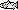

- COMPASS reads in parameter data and model settings from a
base.dat file when initially opened unless otherwise specified by command line options. Other parameter data can be read into the model by selecting File Open or by clicking . The COMPASS distribution includes the "yearly.data" directory which contains
Open or by clicking . The COMPASS distribution includes the "yearly.data" directory which contains .dat files with actual data for each year from 1965 to the present. All changes applied during a session will be used in the Scenario Mode run. In order to save changes made to parameter data and settings for another session, use the Save As feature to save parameter data files or the whole database to a file.
- New releases can be defined by right-clicking on a  on the River Map to open a Release Tool or by selecting Release
New. Existing releases are represented by  on the River Map. See the Release Tool section for further information on creating, deleting, and editing releases.
on the River Map. See the Release Tool section for further information on creating, deleting, and editing releases.
- Transports can be defined for any dam by selecting Dam
Transport. See the Transport Tool section for further information on creating and editing transports. Existing transports are represented by  on the River Map.
Output Settings.
on the River Map.
Output Settings.
A. Set Passage Points: COMPASS computes daily fish passage on a release-specific basis through all river segments and dams. Fish survival and migration time at specific points along the river is displayed in Passage Histograms and in the Message Log after the run completes. You can request specific passage points by setting the options you want in the Output Settings for Dams and Output Settings for Reaches windows.
B. Set Flow Observation Point: A representative river flow over the travel time of a release can be obtained by selecting the dam you want as the Flow Ind. in the Output Settings for Dams window. The average flow will be reported in the Message Log and in the
summary.dat file. Only one flow point can be specified.
C. Set Other Data: Other data such as water temperature at a dam can be requested by setting the options you want in the Output Settings for Dams, Output Settings for Reaches and Output Settings for Headwaters windows.
Note. During a COMPASS session, the selected output settings can be used for multiple runs with various parameter data files by using the Lock Output Settings option (Run menu) to lock the output settings and override any output settings contained in a parameter data file subsequently read into the model.
- COMPASS can be run with different functions that affect the movement and survival of fish through the river system. Specific functions can be set by selecting Run
Runtime Settings and setting the runtime options you want.
Message Log.
- Select Messages from the Logging menu in the window to write results from the run to the log window. See Message Log for other logging options.
Run Scenario or clicking .
Note. The progress of Scenario Mode run calculations will be displayed in the Status Bar of the GUI, lower-left corner.